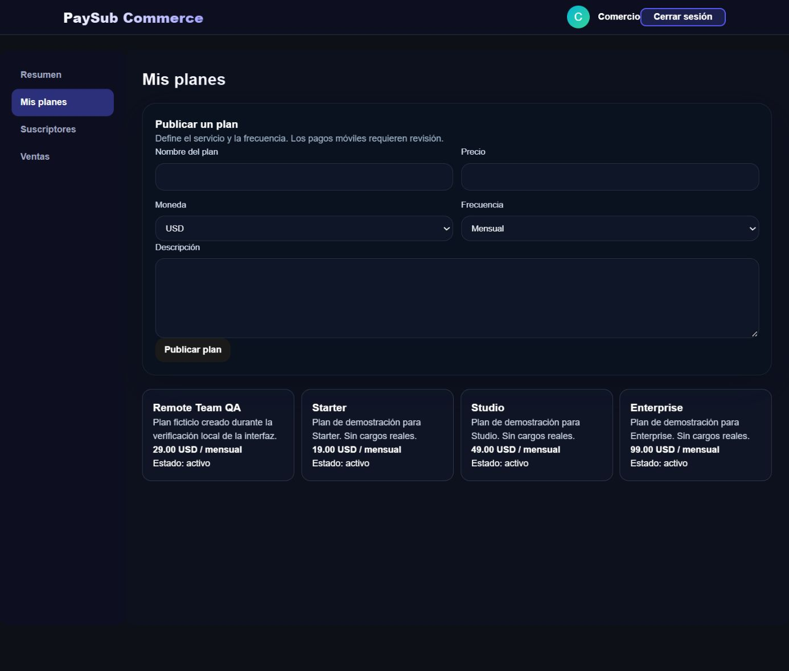

Subscription workflows · Laravel · Case study 04
PaySub
Merchant plans, client subscriptions and bank-transfer review, with authorization enforced in the API.
PHP / Laravel / React / SQL

The problem
Subscription administration needs to distinguish a reported payment from an approved collection. PaySub gives merchants and clients separate workflows and keeps simulated card payments explicit.
The implemented workflow
- A merchant maintains a profile and subscription plans.
- A client subscribes and reports a bank transfer with a receipt.
- The merchant reviews a pending report and approves or rejects it.
- The API checks account status, role and record ownership.
- The interface displays approval state without treating an unreviewed report as income.
Architecture and decisions
Laravel exposes validated API routes with Sanctum authentication, ownership checks and rate-limited verification codes. React provides merchant and client workflows. Receipts use protected storage and authorized downloads. The local demo uses a new SQLite database and synthetic seed records.
Verified on Windows · 7 October 2026
What was checked
25 backend tests with 131 assertions and 4 frontend tests passed on Windows. The frontend build and lint passed; Composer and npm audits reported zero known advisories. Regressions cover ownership takeover, sensitive payment-token exposure, disabled accounts, verification-code replay and receipt access.
Current boundaries
The reviewed update is merged into main. See PR #3 for the review history. Bank transfers are reports for human approval, not an integration with a bank. Card payment is an explicitly disabled-by-default simulation and cannot run in production. No live payment gateway or PostgreSQL deployment was exercised.